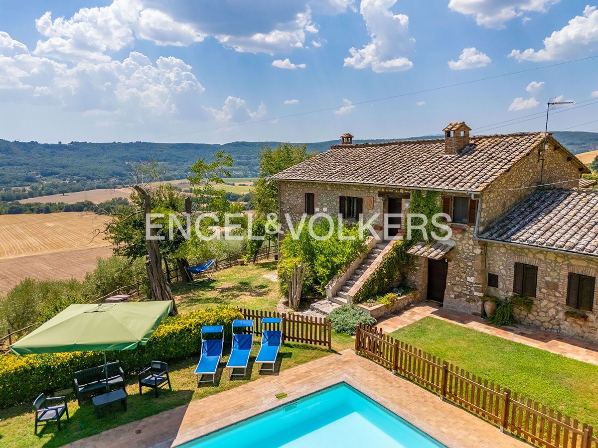

€590.000
Narni countryside (panoramic Tiber Valley views), Umbria
Open the listingBrand-new overnight E&V Assisi-Spoleto listing: beautifully restored stone farmhouse mixing Umbrian rural architecture (tuff fireplace, exposed wooden beamed ceilings) with contemporary comfort, plus a verified built private pool and ~70 olive trees on ~7.300 m² - habitable now, old+new character, well-priced under cap.
Opened 3 Oct 2026 on Engel & Völkers Assisi-Spoleto expose; asking €590.000; ref W-04BWMS; uuid bb806ca9-afa5-5805-9ae3-f1e2f22dcabe; 5 beds / 3 baths; 390 m² total; plot 7.300 m² (garden ~500); olive grove ~70 trees; solar panels; recently built detached outbuilding with outdoor barbecue; two separate entrances / two living rooms. condition.rehabilitationDone. hasSwimmingPool true. Bargain:true for restored stone+pool under €600k.